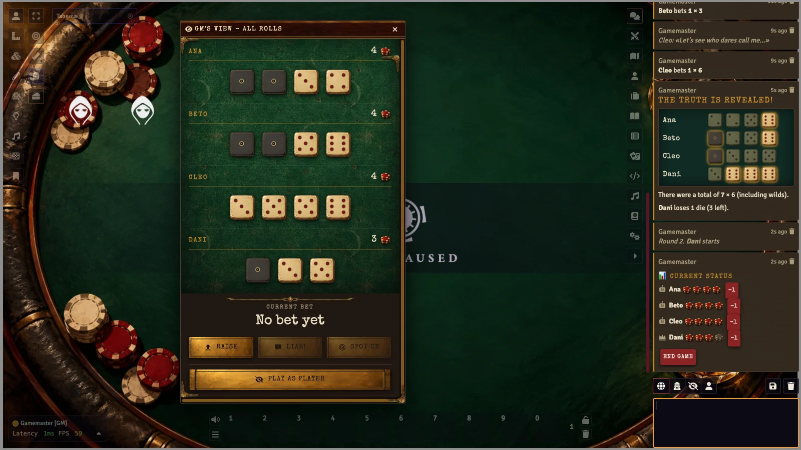
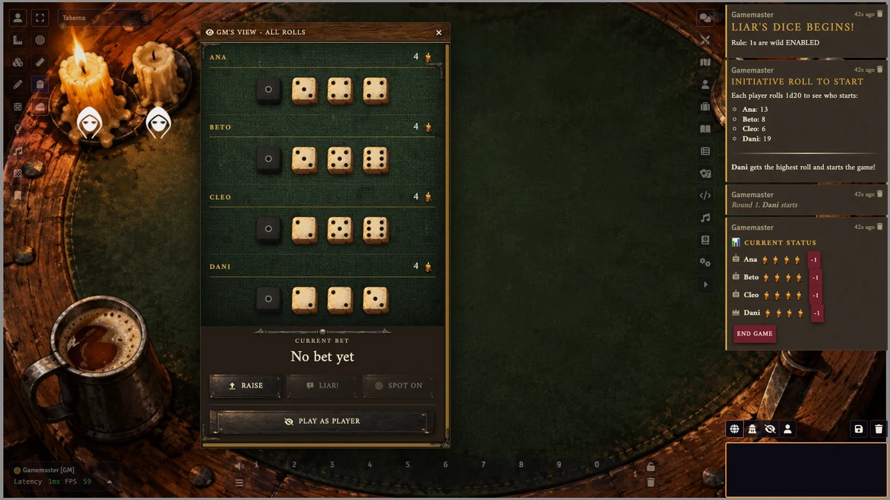
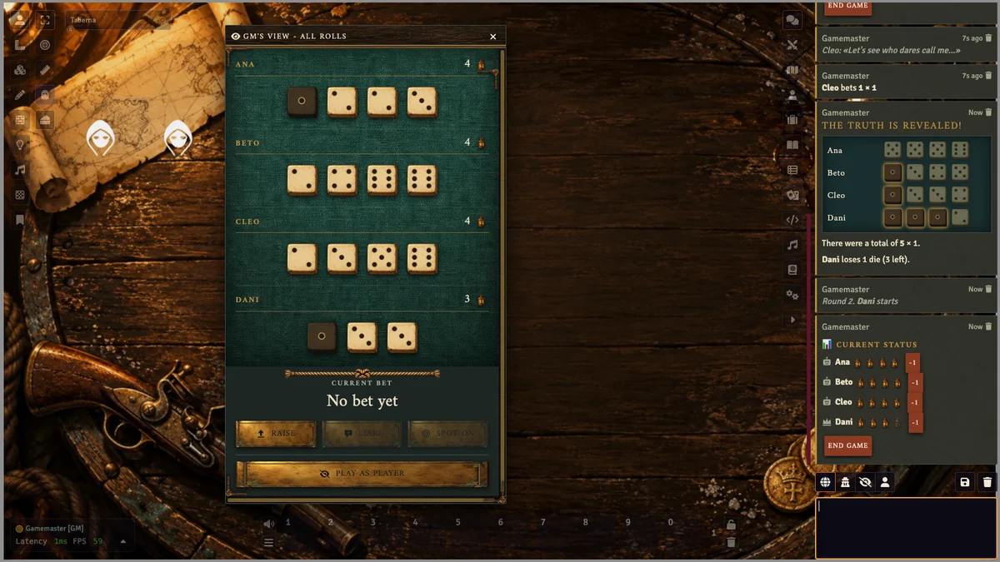
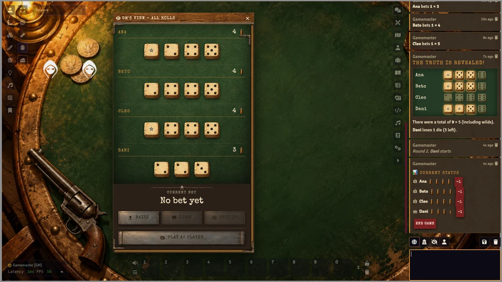
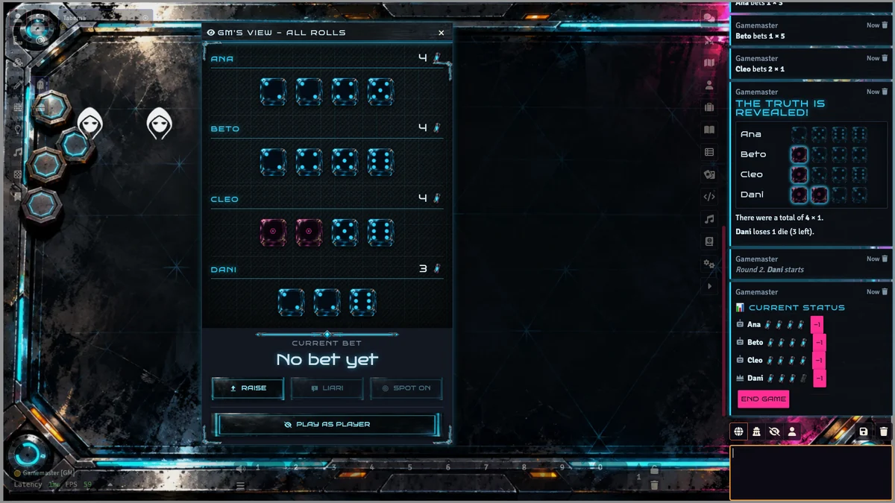
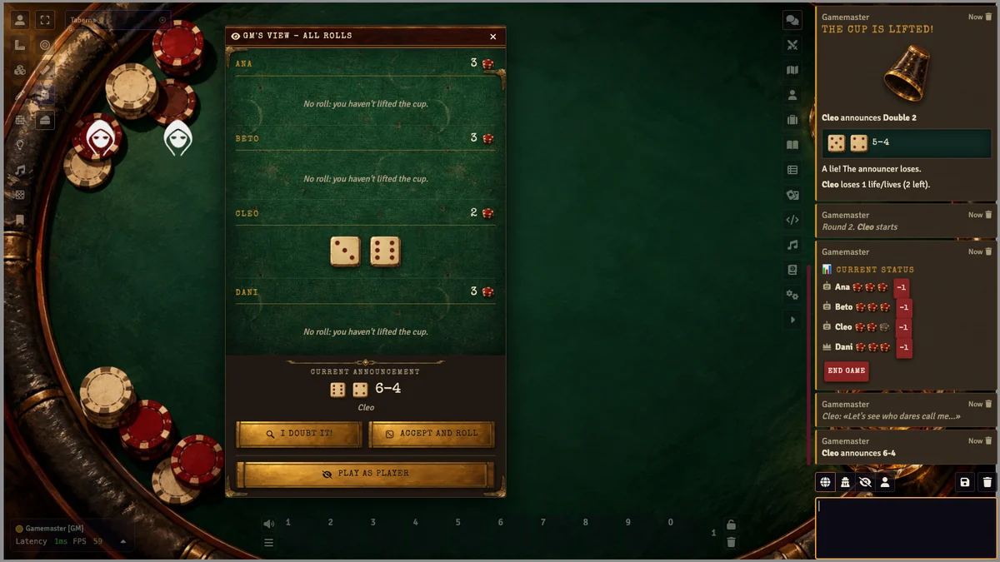

Faroleas, dudas y te juegas el bote.
Juegos de taberna para tu mesa de Foundry, vestidos de la ambientación que toque.
Instalar
En Foundry: Add-on Modules → Install Module → Manifest URL.
https://github.com/ManuRomera/mr-queso-o-mentira/releases/latest/download/module.json
Los juegos
Dado del Mentiroso
Manos ocultas, subir, ¡Mentira! y Calzar. Comodines, Palifico y reglas de la casa o clásicas.
Mia / Meyer
Dos dados bajo el cubilete: anuncia o farolea, cree y tira o duda. La Mia (2-1) lo vence todo y cuesta dos vidas.
Próximamente
Diez Mil, Capitán Barco y Tripulación, Chuza, Siete y media, Tabas y Pulso. El módulo tiene registro de juegos.
Cinco ambientaciones






Por qué te va a gustar
Manos privadas de verdad
Los dados no viajan en los datos públicos: cada jugador recibe solo los suyos.
IAs con personalidad
Tramposa, farolera, cauta u observadora, con frases de taberna.
Bote con dinero
Usa el campo de monedas de tu sistema: entrada, premio y reembolso.
Seguridad en mesa
Solo el GM procesa y valida cada jugada: nadie juega por otro.